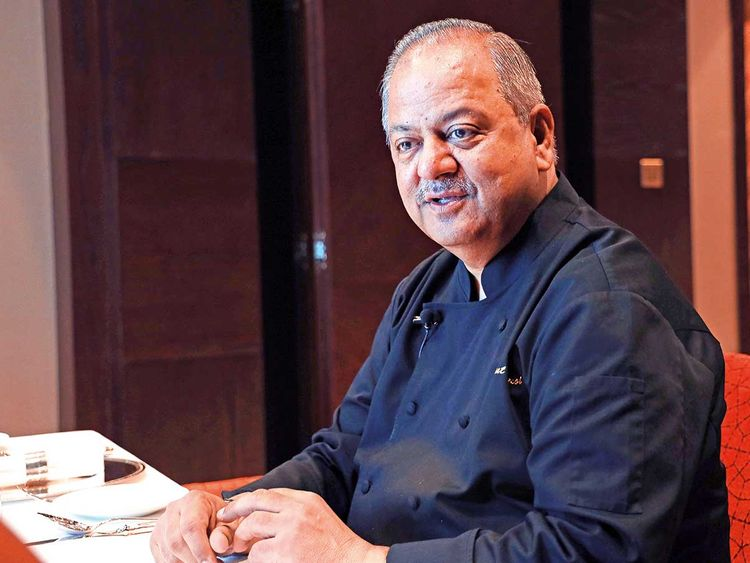
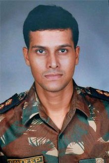

Introduction
The Mumbai terror attacks, also known as 26/11 attacks, were a series of coordinated terrorist attacks that took place in Mumbai, India, on November 26-29, 2008. The attacks targeted several locations in the city, including the iconic Taj Mahal Palace Hotel, the Oberoi Trident Hotel, the Chhatrapati Shivaji Terminus railway station, a hospital, and a Jewish community center.
The attacks were carried out by ten Pakistani terrorists who had arrived in Mumbai by sea from Pakistan. The terrorists were trained by Lashkar-e-Taiba, a militant organization based in Pakistan. The attackers were armed with automatic weapons, grenades, and other explosives.
attacks lasted for four days and resulted in the deaths of 166 people, including 28 foreign nationals, and over 300 others were injured. The terrorists targeted the Taj Mahal Palace Hotel and the Oberoi Trident Hotel where they took several hostages and engaged in a standoff with the Indian security forces.
During the attacks, many of the hotel staff members risked their lives to save the guests. Some of them even lost their lives in the process. This tribute page is dedicated to these brave individuals who showed exceptional courage and selflessness during a time of crisis.
The Heroes
- Karambir Kang, General Manager
- Hemant Oberoi, Executive Chef
- Tukaram Omble, police constable
- Major Sandeep Unnikrishnan, member of the National Security Guard (NSG)
- Ashok Kamte, Additional commissioner of police
These individuals and many others risked their lives to save the guests and staff of the hotel during the attacks. They showed remarkable courage and selflessness in the face of danger.
Images of the Heroes
Karambir Kang was the general manager of the Taj Mahal Palace Hotel, one of the primary targets of the attack. Despite being injured in the initial attack, Kang stayed on to oversee the evacuation of the hotel and the rescue of the guests.
Hemant Oberoi was the executive chef of the Taj Mahal Palace Hotel. During the attack, Oberoi took charge of the situation and led the hotel staff in protecting the guests and hiding them in safe places.
Major Sandeep Unnikrishnan was a member of the National Security Guard (NSG) who was killed in action during the rescue operations at the Taj Mahal Palace Hotel. He was instrumental in rescuing several hostages before he was fatally wounded.

Ashok Kamte was the additional commissioner of police who led the operation against the terrorists. He was killed in action during the attack on the Cama and Albless Hospital.

Tukaram Omble was a police constable who played a critical role in capturing one of the terrorists. Omble intercepted the terrorist's car and refused to let go, even when the terrorist opened fire on him. His brave actions helped the police capture the terrorist.